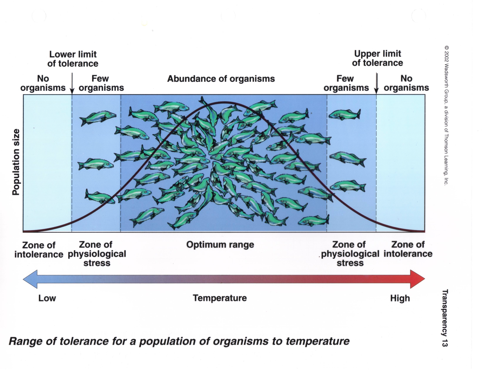

We are going to be building single-species reserves as the project for this class, using a GIS modeling approach. Implicitly, we will be assuming that anywhere a species' habitat is found, the species will also be found. This is not an unreasonable assumption, or at least it is not without justification. For example, we know:
This rationale is the reason that the presence of suitable habitat is commonly used as a substitute for actual data on distribution and abundance of organisms in conservation planning. Censusing animal populations over large areas is often impractical, but environmental characteristics, such as vegetation, elevation, and climate, can be remotely sensed and mapped over large areas.
We can think of habitat as being a set of environmental conditions that have to be met for a particular species to successfully survive and reproduce. Each of these conditions can be codified as a separate variable (e.g. vegetation type, elevation, rainfall, etc.), and locations on a map that meet all of the necessary conditions can then be used as a habitat map for the species. To the extent that we expect the find the species in its habitat, we can use a habitat map as a map of the predicted distribution of the species. This approach forms the basis for much of modern conservation planning, and you will use this approach in your lab project.
There are two basic ways of translating habitat information into a prediction of the distribution of a species. The first approach is to build a GIS model by finding areas on the map that meet all of the conditions. You learned last week to do this using vector polygon maps and overlay functions (clip, erase, intersection, union). Today we will use the raster calculator in Spatial Analyst to build a GIS model based on raster data.
|
For example, if you know that a species occurs at elevations above 1000 ft in the Mojave Desert, you could find locations within the Mojave that meet this criterion, and use the result as a predicted distribution of the species' habitat. An example, using just elevation, looks like this map to the left. Areas that are at or above 1000 ft are colored red, and this becomes our map of predicted habitat for the species. |
| 
The weakness of the approach is that all areas that meet the condition are treated as equally good habitat, which is probably not true. If you recall from the ecology review we did at the beginning of class, we expect that a species will respond to a gradient in its environment, such as water temperature, like the illustration to the left. The x-axis is temperature, and the y-axis is population size - the black curve shows the expected population size of this fish species as temperature changes (I know there aren't a lot of fish in the Mojave, but this is the best illustration of the point I could find. Work with me). At very low temperatures the species is unable to survive, and it should be absent. As the temperature increases, it gets just warm enough for the species to survive - this is the lower limit of tolerance. As the temperature continues to increase, we should find increasingly dense populations of the fish until we reach the best temperature for their survival and reproduction, where abundance peaks. Above this peak the temperature gets too warm, the abundance declines. Eventually the upper limit of tolerance is reached, and the fish is unable to survival because the water is too warm. |
So, given this pattern, we can expect that the species will be abundant where habitat conditions are good, rare where conditions are marginal, and absent where conditions are unsuitable. As a species becomes increasingly uncommon it becomes more likely that we won't see it if we go looking. If we are sampling the environment for this fish by dropping nets into the water and hauling up a catch, we would expect to consistently catch them from water near the optimum temperature, but we will often miss them entirely in water that has marginal temperature conditions. In other words, you can interpret "Few organisms" on the graph as "only sometimes present in samples at this temperature".
There is an additional issue that isn't illustrated in this simple, single-variable GIS model. Habitat is multidimensional, and since organism's habitat is usually defined by more than one variable, habitat models are thus usually based on more than one variable as well. For example, if we were working with a species that occurs above 1000 ft and in areas with precipitation greater than 40 mm, we would use an elevation layer and a precipitation layer, and every pixel that was both above 1000 ft and had precipitation greater than 40 mm would be identified as habitat for the species. When we build a GIS habitat model, each of the criteria we use is treated as equally important, but this is probably very rarely true. In this example precipitation may be really important to the species, and elevation may be less important, but there isn't any way to represent this difference in a binary, yes/no GIS model.
The second approach to predicting distributions is to 1) develop a statistical model that relates the occurrence of a species to environmental attributes found at a sample of locations, and then 2) use the model to predict where the species should be across an entire region. Exactly what is predicted depends on the statistical model used - a linear regression might be used to predict abundance, and a logistic regression might be used to predict the probability of the organism's presence at a site.
Logistic regression is popular for this kind of work because it predicts probability of occurrence, and probabilities can be used as a measure of intensity of use. A probability of 0.8 is interpretable as an 80% chance of finding the organism at a site, or equivalently, 80% of sites with habitat characteristics like those found at the site would contain the species.
|
Logistic regression also allows us to deal with cases in which we have strong associations with some habitat variables, and weaker associations with others. The graphs to the left shows a hypothetical set of locations that were sampled along an elevational gradient; each red diamond is a different sample, and places where this organism was found were assigned a 1, and places where the organism was not found was assigned a 0. This graph is called "strong relationship" because the line that
represents the statistical relationship between elevation and
probability of occurrence shows a steep transition from very high
probability of presence at low elevations, to a very low
probability of occurrence at high elevations. There is a narrow
range of elevations, between about 900 to 1100 ft, where the
species could either be present or absent, but there are no
absences below 800 feet and no presences above 1400 ft. |
|
Compare the strong relationship above to this graph of a weaker relationship. In this graph the species is present across nearly the entire elevational range, but it is present with a greater probability at low elevation than at high elevation. The s-shaped curve that characterizes the statistical relationship between elevation and probability of occurrence is less steep, and doesn't asymptote at 1 or 0 like it did for the strong relationship. Both curves show an inflection point at 1000 ft, where the curves cross over a probability of occurrence of 0.5. |
What does this mean in terms of use of habitat by the species? In both cases the species is using the habitat non-randomly - it is selecting habitat at low elevation. A species that used elevation at random would have a flat line, at whatever proportion of the sites the organism occupied overall (that is, if it was found at half the sites, it would be a flat line at a probability of occurrence of 0.5). However, with the strong relationship we are nearly guaranteed to see the species at sea level, and very unlikely to see it at 2000 feet. With the weaker relationship we have about a 95% chance of seeing the species at sea level, and a 5% chance of seeing it at 2000 feet. The weaker relationship suggests a that the species tolerates a fairly wide range of variation in elevation.
This statistical approach addresses some of the disadvantages of the GIS model. For example, differences in the predicted probability of occurrence of a species can be interpreted as differences in habitat suitability, i.e. habitat in which the species is always found (probability of occurrence near 1.0) will be considered better habitat than one in which the species is only found 75% of the time (probability of occurrence at 0.75). Additionally, as a built-in part of the statistical modeling, variables that have only a small effect on probability of occurrence will be weighted less than variables that have a large effect.
The GIS model above isn't based on probability, so we can think of the GIS model as a definite prediction of presence or absence for a species, with no uncertainty represented in the prediction. There is no easy way to tell from the GIS model which habitat is best for the species and which is only marginal, so it's difficult to know how likely we are to actually see the species when we go to a spot on the map that predicts its presence. For example, what if we went out in the field and surveyed for the species and only found it present in 50% of the sites we sampled? This could be a cause for alarm, if we sampled in high-quality habitat, but it could be exactly as expected if it turns out we had sampled in areas that were only marginally suitable.
Logistic regression models give us a more refined prediction, and we can use the predicted probabilities of presence to help us interpret our field data. If the species had a strong relationship with habitat, and the model predicted a 99.9% chance of a species being present, then if we only found the species in 50% of our samples, we could conclude either that the model was wrong, or that the species might be suffering a decline. If we were sampling in habitat that only had a 50% of containing the species, then finding them only 50% of the time would not be a cause for concern.
Today we will build a GIS model, and equivalent logistic regression models (one representing a strong relationship with habitat, one representing a weak relationship), and we will compare the information we can derive from each.
You will find the data you need in the Lab9_data folder on the P: drive. We will be using data on elevation, January temperature, winter precipitation, and summer precipitation to predict the distribution of a hypothetical Mojave Desert species. The species is a low-elevation, dry habitat specialist that does not tolerate frost. To translate this into a GIS model, we will use the following criteria:
All of the data sets you have are raster files, so you can use the raster calculator to derive the model in one step.
1. Add the files "elevation", "ppt_summer", "ppt_winter", and "temp_jan" to your project.
2. You may need to turn on the Spatial Analyst extension (Customize → Extensions, then make sure the box is checked next to Spatial Analyst).
In the ArcToolbox find Spatial Analyst Tools → Map Algebra → Raster Calculator, and launch it. Bear in mind that the Raster Calculator is VERY FUSSY about format. The safest way to build your model is to use the calculator buttons. If you do choose to type commands, make sure you put spaces, quotes, and parentheses where they are needed.
In the raster calculator, build the following expression (including the parentheses around each comparison):
("elevation" < 1000) & ("ppt_summer" < 40) & ("ppt_winter" < 100) & ("temp_jan" > 0)
Set the output map to "gis_model" in your lab9 folder (on the S: drive).
Although we are using a calculator, all of the operations are "boolean", meaning they all evaluate as "TRUE" or "FALSE". Each of these statements in parentheses use a comparison operator (either a < or a >), and will evaluate as TRUE if a pixel meets the condition, and FALSE if it does not. The ampersand character (&) means "And". "And" operations are only true if all parts are true, so linking a string of comparisons together with & only results in a TRUE every one of the conditions are TRUE. If any of the conditions are FALSE, the entire statement is FALSE. This is why all of the variables are considered equally weighted in a GIS model, because each variable has a "veto power" over the rest. Click "OK" to run the raster calculator.
The map should look like this (although hopefully with better colors). The green areas are 1's (which to a computer is the value for "TRUE"), which indicate the elevation, January temperature, and winter and summer precipitation criteria are all satisfied. The purple areas are 0's (which to a computer is the value for "FALSE"), which indicates at least one of the conditions were not satisfied.
To illustrate the difference between GIS models and statistical models, we will be using the results from a logistic regression, which I will provide you, to predict the probability that our organism will occur within a pixel given our four habitat variables. The lines in the figures in the introduction are based on a single variable, and are generated with the following equation:
Look for a minute at how this equation works. In the exponents of the base e, there is a straight line equation (m is the slope, which here indicates the strength of the relationship with elevation, and b is the intercept that positions the curve along the x-axis). The straight line equation in the exponents can predict either positive or negative numbers. As you know, negative numbers in an exponent make the number approach zero (remember, e-x is the same as 1/ex ... as X gets infinitely large 1/ex gets infinitely small). When the straight line part predicts large negative numbers the exponentials approaches zero, and the equation predicts p = 0/(1+0) = 0. Big positive numbers predicted by the straight line part make the exponentials very big. When the straight line part is very big the exponential parts in the numerator and denominator dominate the prediction, and the 1 in the denominator becomes increasingly unimportant to the predicted probability. For example, if the exponential parts of the equation equal 1000, then the predicted probability of occurrence will be 1000/(1+1000) = 0.999. When the straight line parts predict a value of 0, then the exponentials become e0, which equals 1; the model then predicts p = 1/(1+1) = 0.5, which is the "inflection point" at which the shape of the curve goes from increasing to decreasing.
Another form of this equation is less easy to understand, but is easier to compute:
This is the form we'll be using to make our predictions.
A nice feature of logistic regression (and of linear regression too) is that you can add additional predictors by adding a slope multiplied by the variable to the straight line part in the exponent, like so:
Here the straight line part in the exponent of the denominator still has a
single intercept, but has slopes for each of the variables included.
Although this looks complicated, it is really just a simple extension of
the first equation, and works the same way.
The slopes allow the variables to be weighted differently - a slope near zero will cause the variable to have very little effect on the predicted probability of occurrence, whereas a large slope will cause the variable to have a big effect. Positive slopes mean that the probability of occurrence increases as the variable increases, and negative slopes mean the probability of occurrence decreases as the variable increases. Bear in mind, though, that the slopes also adjust for differences in measurement scale, so it's not easy to compare slopes between variables to figure out which is most heavily weighted (for example, elevations range across thousands of feet, while temperatures range across a few tens of degrees - even if temperature and elevation are equally important to the species the elevation slope will be smaller than the temperature slope because of this difference in range). We would need to look at "standardized" coefficients, which account for differences in measurement scale, to compare among variables. For our purposes today, the important thing is that using this approach allows the variables to have different degrees of effect on probability of occurrence.
Because the equation is a little awkward to work with we will be doing our predictions in two stages to prevent errors, and make them easier to detect if they do occur. In the first stage, you will create a map with the straight line part of the equation, which is:
and the second stage will take the straight line predictions and plug them into the exponential function (which is e-y), and predict probability of occurrence:
Simple, no?
We will use the following values for the "parameters" (the intercept and slopes):
b = 17.848434
m1 = -0.000787
m2 = 2.24148
m3 = -0.171888
m4 = -0.118149
Open of the "Raster Calculator", and build the equation...
17.848434 - 0.000787 * "elevation" + 2.24148 * "temp_jan" - 0.171888 * "ppt_winter" - 0.118149 * "ppt_summer"
you can accept the default output location (we don't need to save this file, it's just a calculation step), but call it "stage1". If all goes well this will give you a new layer that ranges from -123.699 and 15.0314.
Question: Do the signs on the slopes agree with the habitat description for this species?
Click here to see if you're right.
Open the raster calculator again, and build the following statement:
1 / (1 + Exp( - "stage1"))
and call the output "strong_hab" (and place this in your lab8 folder). Watch the negative before "stage1", you won't get the right answer without it. The resulting map should have continuous numbers that fall between 0 and 1.
Although ultimately we might prefer the logistic regression-based model to our original GIS model, it would be nice to compare their predictions. We can't convert the GIS model to predicted probabilities, but we can convert our probabilities to predicted presences. To do this, all we need to do is to assign any predicted probability greater than 0.5 to a predicted presence (1), and any predicted probability less than 0.5 to a predicted absence (0). You can do this with the raster calculator with the expression:
"strong_hab" > 0.5
Call the output file "strong_pres" (short for strong habitat, predicted
presence).
Why does this expression work? When we compare one value to another using a comparison operator (such as =, >, <) we will either get a value of "True" or "False". To a computer, "True" is equal to 1, and "False" is equal to 0. We can take advantage of this behavior to round our predicted probabilities to 1 and 0, which we can then use as a map of predicted presence and absence.
What if the habitat association was weaker? Repeat the first stage calculations using the following coefficients:
b = 8.924217
m1 = -0.0003935
m2 = 1.12074
m3 = -0.085944
m4 = -0.0590745
These are all 1/2 the value of the previous ones, which results in a shallower curve that doesn't approach 0 or 1 rapidly. Use them to build the expression:
8.924217 - 0.0003935 * "elevation" + 1.12074 * "temp_jan" - 0.085944 * "ppt_winter" - 0.0590745 * "ppt_summer"
for the first stage calculation (call it "stage1_w" for the stage 1 calculation, weak habitat relationship).
Now, repeat the second stage calculation using stage1_w instead of stage1, and save the resulting probability map as "weak_hab".
Predict presence and absence in the raster calculator using the expression "weak_hab > 0.5", and call the resulting presence/absence prediction map "weak_pres".
Now, it would be nice to be able to compare the weak habitat model to the strong, but both are raster layers, and we can only look at one at a time. Also, ArcMap scales the shades of gray to the numbers in the raster layer, which makes the comparison more difficult - if they both used the same color for the same probabilities it would be easier to see how they compare. We'll fix the second problem first.
Double-click on weak_hab and switch to the "Symbology" tab. The layer will have had a "Stretched" grayscale color ramp assigned to it, which is okay but we want it to use the stretched grayscale ramp of the strong habitat layer instead (we'll assign the strong to the weak rather than the other way around because the strong covers a slightly wider range of values). Click on the "Open file" (folder) button, and select the "strong_hab" layer as the color ramp to import, and click "OK". The color ramps are now the same between the layers, which means a shade of gray means the same thing in both strong_hab and weak_hab.
Next, we want to be able to compare the layers more easily. We can't display both at once, but we can "swipe" one, which will reveal the other one. Select "Windows" → "Image analysis". In the list of layers, turn off everything except weak_hab and strong_hab. Click on weak_hab to select it, and then find the "Swipe layer" button, which is just above the "Processing" area (it looks like this). If you then click someplace over the map, you will see the weak_hab layer is removed above your mouse, showing the strong_hab layer. You can click, hold, and move your mouse to swipe away the weak_hab wherever you want, so that you can compare the two layers more easily. You'll see that the only difference between them is that the weak habitat association shows less contrast (more shades of gray) than the strong habitat association, but they both should show the same transition from probabilities less than 0.5 and greater than 0.5 occurs. Thus, the change is much like the change from the strong relationship and the weak relationship illustrated in the figures at the beginning of the handout.
You can also compare the strong_pres to weak_pres. As you change between them you'll see color change, but the distribution of the 1's and 0's should be almost identical between them. If you compare either of them to the gis_model map, you'll see only minor differences between them. All three are representing the same habitat association.
We will compare the maps in the next exercise.
You now have predicted distributions from a GIS model, and one strong statistical model and a weak statistical model. How do they compare?
To explore this question, we will be subtracting the different predictions from one another and comparing the results. For example, to subtract the GIS model predictions from the predicted presence in based on the strong habitat model, you would use the expression:
("strong_pres") - ("gis_model")
Call the output "st_pres_gis". Repeat this procedure, substituting weak_pres for strong_pres (output should be wk_pres_gis).
The resulting maps should contain only three possible values: -1, 0, and 1. Places where the GIS model makes the same prediction as the statistical model (i.e. the models "agree") you will have a 0. Places in which the statistical model predicts presence and the GIS model predicts absence you will have a 1, and places in which the statistical model predicts absence and the GIS model predicts presence you will have a -1. The GIS model should be similar to each of the statistical models, and you should have primarily zeros (they would be identical if your instructor was more clever, but I got them as close as I could).
How do the two statistical models compare? Subtract "strong_pres" from "weak_pres." Lacking any rounding error they should be identical, but you will probably see a few non-zero pixels.
So, we now have probabilities of occurrence from the strong and weak habitat models, as well as the GIS model predictions, and the presence/absence versions of the strong and weak habitat models. A GIS model, or a predicted presence/absence obtained from the probability calculations, gives a uniform prediction of presence, with no uncertainty represented. The logistic regression habitat models intrinsically represent uncertainty, in the sense that a predicted probability of occurrence of, for example, 0.75 tells us that we should expect 75% of habitats like the habitat in the pixel to have the species present, and in 25% the species would be absent.
This becomes an issue in a couple of contexts. First is the "my favorite pixel" problem. If you present a GIS map of habitat to someone who knows the area that is mapped, they will point at a pixel on the map and say "Your map says the species is absent here, but I saw it there just last week". A predicted absence can mean the species is expected to be present as much as 49% of the time, so this isn't necessarily a prediction failure, it just appears to be one. The second problem is that it's really important to validate a model by collecting new data and comparing the model predictions to the data. A presence/absence map will only ever be correct or incorrect, but in areas where the probability of occurrence is 0.51 you expect the species to be absent 49% of the time. Every time an area that is predicted to contain the species does not, it will be scored as a "commission error" - a predicted presence that is wrong. Large rates of commission error are a strike against the habitat model, and it may lead to the impression that the habitat model is incorrect. However, if the actual probability of presence is 0.51, the model is only predicting badly if either the species is present at a much higher rate or a much lower rate than 51% of the samples. Using a probability-based habitat map allows you to get a much more precise idea of the predictive accuracy of the model, and can prevent you from throwing out a perfectly good habitat model.
So, the question we will address now is, how much uncertainty in predicted presence and absence is the habitat model obscuring?
To answer this question, use the Raster Calculator to subtract the predicted presence for the strong model from the predicted probabilities (that is: ("strong_pres") - ("strong_hab") ). Remember, the strong_pres map is supposed to match the GIS habitat model exactly, but since they aren't perfect matches we'll use the strong_pres map to compare against the probabilities. That way we can just focus on the uncertainty that comes from predicting presence/absence from a set of probabilities, without having to account for the slight differences between the GIS map and the statistical presence/absence maps.
The map will look something like this:
The values will range from -0.49 to +0.49, with black indicating negative and white indicating positive differences. Since we subtracted the probabilities from the presence/absences, positives will be places that were predicted present (1 - a probability), whereas blacks will be places that were predicted absences (0 - a probability). The closer to white or black, the greater the amount of prediction error we can expect. Places that have a predicted "absence" (that is, those that were rounded down to 0) can be different from the predicted probability by as much as -0.5, and places with a predicted "presence" (that is, those that were rounded up to 1) can be different from the predicted probability by as much as 0.5. These are places where the presence of the species is maximally unpredictable - whether the species will occur or not is the toss of a coin.
Repeat this calculation with "weak_pres" and "weak_hab" (that is: ("weak_pres") - ("weak_hab") ). How do the differences compare between the map of the strong relationship and the map of the weak relationship? Do you see a greater amount of nearly white or nearly black pixels? This would indicate a greater amount of uncertainty in our predictions of presence or absence.
So, bear in mind: when we predict the presence of a species based on its habitat needs, even if we understand the habitat associations well, we can expect to sometimes fail to see them where they're predicted to occur, or to see them where they are not predicted to occur. Locations that have close to a 50% chance of occurrence are the most uncertain, and if the habitat association is weak there may be a lot of area on the map that gives only a moderate chance of the species being present. GIS maps aren't immune from this uncertainty, but the way they are constructed doesn't give us a way to assess our relative confidence in our predictions.
{kind=link}
{kind=link}